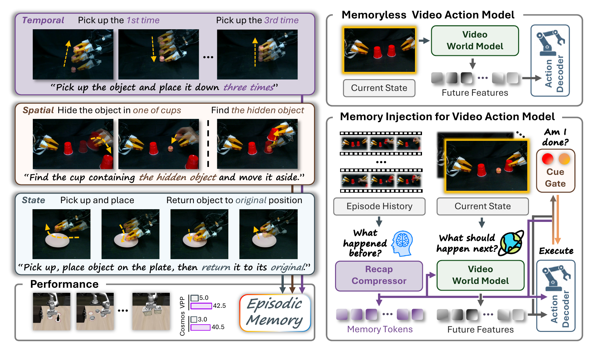
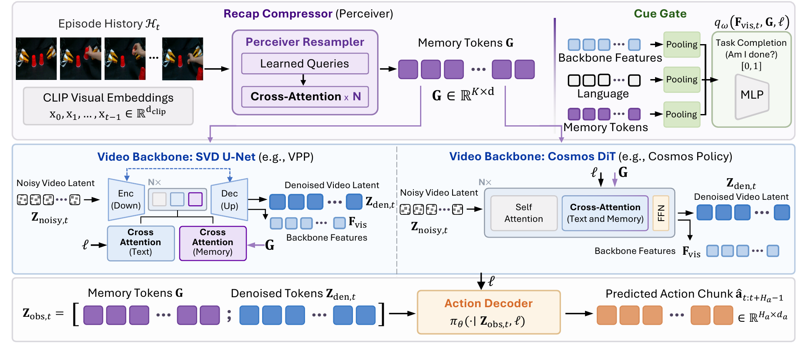

Shell Game
Overview

We introduce MemoryVAM, an episodic memory mechanism for video action models that conditions both future prediction and action decoding on episode history.
The MemoryVAM Model

MemoryVAM compresses episode history into Recap tokens, injects them into the video backbone and action decoder, and uses a Cue Gate for task completion.
Experiments
Real Robot Rollouts
Shell Game
Shell Game
Shell Game
Counting *1
Counting *3
Counting *5
Place and Return
Sim Robot Rollouts
One checkpoint, 10 memory-dependent tasks.
Pick up the bowl and place it on the plate.
Lift the bottle and put it down on the plate.
Lift the bowl and place it back on the plate 3 times.
Pick up the bottle and put it down on the plate 3 times.
Lift the bowl and place it back on the plate 5 times.
Pick up the bowl and place it on the plate 7 times.
Swap the two bowls on their plates using the empty plate.
Rotate the three bowls from left to right using the empty plate.
Put the cream cheese in the nearest basket and place that basket in the center.
Put the cream cheese in the nearest basket and place the empty basket in the center.
Analysis
Video Prediction vs. Real Execution
Video Prediction
Real Execution
Comparison with Memoryless Baseline
w/ memory
Iterative Video Generation
w/o memory
Iterative Video Generation
w/ memory
Policy Rollout: With Memory
w/o memory
Policy Rollout: No Memory